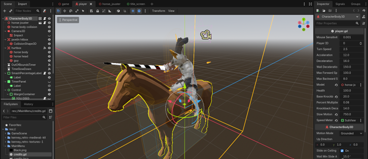

Godot – Flexible, Free, Fast!
April 2nd, 2026 by utinj
Alternatives
Unity - The industry standard. Versatile, supported, and free for beginners. The most popular option for game engines.
Unreal - Graphics and power above all. The most in-depth engine when it comes to graphical fidelity. Hard for beginners.
GameMaker - A beginner oriented engine with many tools and resources designed for those starting out.
| Supported OS | Windows, Linux, Mac |
| Size | ~150 mb |
| Engine type | Scripting |
| Recommended Specs | Very low |
| Price | Free! |
Ease of use:
Versatility:
Overall:
Godot's websiteGodot is a flexible, free, open source game engine with 2D and 3D support. In recent years, Godot has surged in popularity and is now a cornerstone of indie game development. As it relies heavily on scripting, it is an engine geared towards those with some programming experience, much like Unity, its primary competition for indie development. As an open source project, you can find their GitHub here. Godot primarily uses its own language, GDScript, with support for C#. While Unity remains the industry standard, Godot is a great alternative with quite a lot of benefits, to the point where I’d consider it my favorite engine. That isn’t to say it is perfect, but for those looking to make their first game, it has its merits.
As said before, Godot is completely free and open source! There are no hidden fees to speak of, and all the code of the engine is free to look at, modify, and contribute to. Compared to its main scripting engine competitor, Unity, Godot also runs much faster. While Unity includes various features and tools that can be useful such as version control and in-built tutorials, Godot is an extremely slim and quick program that can practically run on any machine. It supports all major OSes (Windows, Linux, Mac), and installing the entire editor takes less than 200mb. In comparison, Unity takes nearly 10gb for an installation. This makes it very versatile, while also removing a piece of friction when it comes to being motivated to work on a game, considering the much longer load times of Unity. Another huge boon in Godot’s favor is its amazing documentation at this site.
When it comes to technical authoring, these documents are probably some of my favorites in general, featuring great visuals, UI, and intuitive language. As GDScript is based on one of the most beginner friendly languages, Python, there are good avenues for the unexperienced. As for the engine itself, Godot is relatively feature complete, using a node-based system of parents and children, placed into scenes. In my opinion, this system is intuitive and works great for making large projects as it borrows many key ideas from OOP (Object Oriented Programming). The editor itself features UI that is made using Godot’s own Control node system, with neat iconography and layout.

Unfortunately, there are drawbacks too. Like I said before, Unity is the industry standard. That means much more resources online, especially when it comes to videos. Less resources also means less places to get assets for a game, like sprites, sounds, and other prefabs. While Godot has C# support, the online resources for learning about it are slim in comparison to GDScript. For those concerned, learning Godot means less transferable skills for jobs, since there are many more employers that ask for Unity experience. The difference in usage and funding means that Godot also lacks some of the most cutting-edge features in game development, with special emphasis on graphics and animations, though it isn’t relevant for most starting out.
Overall, I would say that Godot is a very solid choice, especially for starting out. It is still my personal favorite game engine and has a lot of amazing and comprehensive features. As a free, beginner friendly, comprehensive game engine, Godot remains as one of the top picks for game development. There hasn’t been anything that has made me want to switch over to anything else, other than some mild annoyances or the urge to try something new.